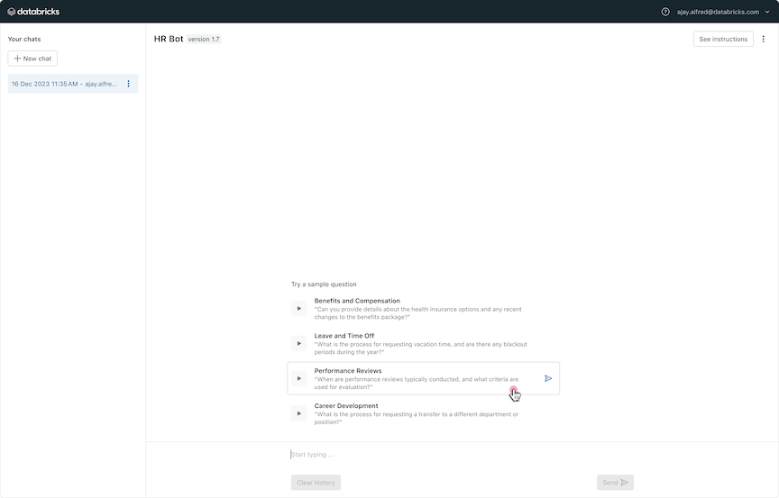

Getting started
TODO: add prose about the goals of this seciton
we will iteratively build a simple rag application to explain to you the concepts of rag studio and show you how the workflow works.
we intetionally build the absolute bare minimum at first to show the concepts - then we add in the actual functionality of a rag app
assumes you understand what rag is - if you don’t link to unstrctured rag overview docs.
Note
This guide is intended for developers who prefer to use a local IDE, such as Visual Studio Code, to build their RAG Application. If you prefer to use the Databricks Notebook IDE, please follow insert link to those steps.
Note
This guide assumes you want to use RAG Studio’s development workflow, which is reccomended by Databricks as the simplest path to building high quality RAG apps. However, RAG Studio is designed modularly so developers that have an existing application and development workflow can still benefit from specific components of RAG Studio, such as the Review UI for collecting user feedback, Request/Feedback logging APIs for capturing Chain traces, or the Evaluation tools for computing Metrics or computing LLM-Judge feedback. If you prefer this approach, see insert link to guide for just using these tools.
Step 1: Set up the required infrastructure
A RAG Studio app must deployed within a Databricks Workspace. All necessary assets are created within a selected Unity Catalog schema. insert link for more info on customizing the UC locations per asset type
Select a Databricks Workspace with Unity Catalog and Serverless enabled in a supported region. Note the URL of the Workspace to use in Step 2 e.g.,
https://workspace-name.cloud.databricks.com.Warning
RAG Studio is currently only supported in LIST OF REGIONS
Do one of the following to select a Unity Catalog schema to use for your RAG Application:
Create a new catalog and new schema inside the catalog.
Create a new schema inside an existing catalog.
Select an existing Unity Catalog catalog and schema. You can view existing catalogs and schemas by going to https://workspace-name.cloud.databricks.com/explore/data
Note
TODO: Insert the required permissions you must have to this catalog/schema.
Decide a location in your workspace where the RAG Application’s deployed code will reside. This folder will be automatically created if it does not exist. If you aren’t sure, we suggest a folder in your Workspace home directory e.g.,
/Users/your.email@company.com/rag-app-name/.Note
TODO: Insert note if this must be a workspace folder vs. a repo folder. Also note if we overwrite the existing contents or not.
Step 2: Initialize your development environment
Follow the Databricks CLI installation instructions to install or upgrade the Databricks CLI on your development machine.
Verify you have the correct version of the Databricks CLI installed.
databricks --versionNote
Databricks CLI version 0.205.2 or higher is required.
Authenticate the Databricks CLI following the steps for using your personal access token or OAuth user-to-machine (U2M) authentication.
Note
You must use the same Workspace that you identified in Step 1.
Note
Contact your Databricks administrator or account represenative if you aren’t sure the correct authentication mechanism to use.
Step 3: Clone the RAG Studio template
Open the terminal on your development machine and switch to a directory that will hold the application’s code base.
cd /path/to/a/directory/
Initialize the sample application using the RAG Studio Bundle template.
databricks bundle init https://github.com/databricks/rag_studio --template-dir templates/blank_rag_app
You will see a folder
rag-appinside/path/to/a/directory/.TODO: Add a step for setting up the Python environment
Optionally, create a Git repo and commit this folder of code. insert link for generic git repo creation instructions.
Learning moment: Understand the structure of the RAG Studio app code base
Before we configure the application, let’s understand the directory structure of the RAG Application.
RAG Studio is based on Databricks Asset Bundles, which is Databricks’ tool for streamlining the development of complex data, analytics, and ML projects on the Databricks platform. Bundles make it easy to manage complex projects during active development by providing CI/CD capabilities to your software development workflow in a single concise and declarative YAML syntax.
RAG Studio uses Bundles to simplify your development and deployment workflows and provide you a unified code base that works in both development and production environments – just like you would expect from a typical full-stack software application’s code base.
rag-app/
│
├── databricks.yml <- Main configuration file for the Bundle.
├── rag_studio.yml <- Main configuration file for RAG Studio.
# TODO @ Eng: Can we merge the 2 files above into a single YML?
├── resources/
│ │
│ └── env_setup_job.yml <- RAG Studio provided file for setting up the Workspace to run your application. Do not modify.
│
└── src/ <- Store all Source code directory for the application.
│
├── chains/ <- Chains, which orchestrate responses to user queries.
│ └── sample-chain/
│
├── data_ingestors/ <- Data Ingestors, which load raw data to Databricks.
│ └── sample-data-ingestor/
│
├── data_processors/ <- Data Processors, which turn raw data into Vector Databases.
│ └── sample-data-processor/
│
├── retrievers/ <- Retrievers, which enable Chains to query Vector Databases.
│ └── sample-retriever/
│
|── provided_notebooks/ <- RAG Studio provided Notebooks for running workflows such as evaluation. Do not modify these notebooks.
|
└── setup/ <- RAG Studio provided code to set up the Workspace. Do not modify.
Step 4: Configure the application to use your Workspace & Unity Catalog schema
Now that you understand the high level structure of the code base, let’s get started by completing the required configuration. If you want to learn more about the other configuration options, view the configuration documentation.
Note
TODO @ eng: I have intentionally NOT gotten into trying to merge the rag_config.yml with the databricks.yml that comes with the Bundle - consider rag_config.yml like a PRD - it is the requirement for the configuration options we provide users, NOT a dictation of HOW we should provide these options in the context of the DAB!!
Open the
rag_config.ymlin your IDE.Modify the
global_configsection to reference the Workspace, Unity Catalog schema, and Workspace folder you configured in Step 1.global_config: ######## # Required, global configuration # These settings are consistent between all Environments ######## # User provided name of the application. Only alphanumeric chars, `_`, or `-`; no spaces. name: your-app-name-here # The workspace where the application is deployed workspace_url: https://workspace-name.cloud.databricks.com # The folder where the deployed code is written workspace_folder: /Users/your.email@company.com/folder-name # Unity Catalog location - used for all assets stored within UC. # Can be overrridden for specific types of assets below using `artifact_location`, `output_data_location`, or `logs_location` unity_catalog: catalog: catalog_name schema: schema_name
Deploy the skeleton application to your Workspace. TODO: talk about what this does - creates the infra, etc, etc.
databricks bundle deploy -t dev setup
Learning moment: What is an environment?
Environments are RAG Studio’s approach to enabling you to use a single code base for your RAG application, but maintain logical seperation between your development and production environments. In this tutorial, we will only use the development environment. Read the environments documentation to learn more about how to use environments.
Learning moment: What is a Chain?
TODO: branch into seperate doc
To use RAG Studio’s development workflow, the bare minimum requirement is to configure a Chain. A Chain is the “heart” of your application and contains the orchestation and business logic to respond to user queries by querying vector databases and prompting generative AI models to generate responses to those queries.
A typical Chain accepts a user query, performs query processing, queries a Retriever, and then prompts a foundational model with the query and retriever results to generate a response to the user. However, Chain logic can be arbitrarily complex and often includes additional steps.
RAG Studio is compatible with any MLflow logged model that has the following request/response schema. The request schema follows the OpenAI ChatMessages format and the response schema follows the ChatResponse.
Note
TODO: talk about LangChain support, link that section
request_signature = {
# `messages` is an Array of [ChatMessages](/machine-learning/foundation-models/api-reference.md#chatmessage)
# To support support multi-turn conversation, your front end application can pass an array of length >1, where the array alternates between role = "user" and role = "assistant".
# The last message in the array must be of role = "user"
"messages": [{"role": "user", "content": "This is a question to ask?"}]
}
response_signature = {
# `choices` is an array of ChatCompletionChoice
# There can be 1+ choices, but each choice must have a single [ChatMessages](/machine-learning/foundation-models/api-reference.md#chatmessage) with role = "assistant"
"choices": [{
"index": 0,
"message": {"role": "assistant", "content": "This is the correct answer."},
"finish_reason": "stop"
}],
"object": "chat.completions"
# TODO: add the rest of https://docs.databricks.com/en/machine-learning/foundation-models/api-reference.html#chat-task schema here
}
Note
üöß Roadmap üöß
Support for streaming responses is on RAG Studio’s roadmap.Note
**TODO @ ENG: We should switch the response type to mirror the FMAPI -https://docs.databricks.com/en/machine-learning/foundation-models/api-reference.html#chatcompletionchoice
When you deploy a Chain with RAG Studio, RAG Studio automatically adds the following properties to the request/response signature of the Chain’s deployed REST API. The additional request parameters allow RAG Studio’s logging service to track Converastions and user sessions, and optionally request the detailed trace logging if you need to display this in the user facing application. RAG Studio’s Review UI uses this information to render the feedback UX - we will deep dive into this capability later in the tutorial. The additional response parameters allow you to capture the request_id if you want to log additional information in your application to later associate with RAG Studio’s logging.
request_signature = {
# "messages" = ...
"databricks" : {
"return_trace": True, # False by default
"conversation_id": "123456", # Converastion ID is managed the front end application
"session_id": "4568", # User Session is managed the front end application
},
}
response_signature = {
# "messages" = ...
"databricks" : {
"request_id": "XXXXXXXXXX" # Generated by RAG Studio
"trace_steps": [ # Generated only if return_trace is true in the request
{
# Tracing for the corresponding choice.
# [insert link with details here]()
}
],
},
}
Read the Chain documentation learn more about how a Chain works.
Learning moment: Trace Logging
TODO: talk in more depth what trace logging is, the concept of a trace vs. conversation.
Step 5: Create a Chain
We will start by creating the simplest version of a “fake” chain that simulates the typical steps in order to demonstrate the RAG Studio development workflow for building, testing, and deploying chains with Trace Logging.
Later, we will iteratively add functionality to demonstrate the other RAG Studio functionality including config-driven experimentation and feedback collection.
The basic steps you follow are:
Add the Chain to the RAG Studio’s configuration
This step enables the various downstream functionality mentioned above.
Write Python code that configures and logs your chain to an MLflow model
Your code can be a Notebook or a Python file.
Test the chain locally to verify it works
Optionally, write unit tests to programatically verify the chain’s functionality
Deploy the chain using the Bundles command line tool
RAG Studio handles the behind-the-scenes work to deploy the chain to Databricks Model Serving as a CPU endpoint with logging enabled.
Interact with the Chain through the Review UI web app.
By following this workflow, you get several benefits:
All requests / responses to the Chain are automatically logged during development AND production with automatic linking to the associated converastion & user session
Later we will show you how to expand this logging to include logging of the intermediate steps that happen inside the Chain
Every log is attached to the exact version of the Chain’s code, configuration, and upstream data that was used to generate a response
Optionally, an LLM-judge asessment can be automatically run for every chain invocation
The deployed Chain’s REST endpoint includes callbacks for attaching user feedback to a chain invocation
The Chain is available in the Review UI, RAG Studio’s web-based chat app for allowing your expert stakeholders to interact with the Chain and provide feedback
Note
TOOD: How do we allow the user to configure the model serving endpoint settings per environment?
Now that you understand the workflow, let’s walk through the steps in detail
Update
rag_config.ymlto make RAG Studio aware of your chain. The minimum configuration required is a chain name and job name, but we suggest providing a description.chains: # currently, only one chain per application is supported, but this schema allows for adding support for multiple chains in the future - name: example-chain # Required, user specified, must be unique, no spaces description: A simple example chain # Optional, but a best practice. User specified, any text string
Write the chain’s Python code in the
src/chains/example-chain/folder aschain.py. Databricks suggests using the same folder name as the chain’s name inrag_config.yml, but you do not have to.In this sample Chain, we simply return the user’s message back to them. Additionally, we have a “fake” retriever step to demonstrate how Trace Logging works - for your actual chain, you would implement an actual retriever - see STEP for those how to do this.
from databricks import RAGStudio import mlflow # Initiatalize RAG Studio for this component # Must match the name in the rag_config.yml this_chain = RAGStudio().Chain(name="example-chain") # Define PythonModel which is compatible to OpenAI-compatible APIs to log with mlflow.pyfunc.log_model class SampleChain(mlflow.pyfunc.PythonModel): def predict(self, context, model_input, params=None): """ This method generates prediction for the given input. The input parameters are compatible with `llm/v1/chat` https://mlflow.org/docs/latest/gateway/index.html#chat """ from databricks import RAGStudio this_chain = RAGStudio().Chain(name="example-chain") # The standard parameters for chat routes with type llm/v1/chat can be find at # https://mlflow.org/docs/latest/gateway/index.html#chat # Get the last message user_query = model_input["messages"][len(model_input) - 1] if user_query["role"] != "user": raise Exception("Last message must be of role = user") response = f"This is what you said to me: {user_query['content']}" # TODO: Insert a trace logging call that logs fake retriever results this_chain.log(data=[]) # Return in https://docs.databricks.com/en/machine-learning/foundation-models/api-reference.html#chat-response format outputs = { "choices": [ { "index": 0, "message": { "role": "assistant", "content": response, }, "finish_reason": "stop", } ], "object": "chat.completions", } return outputs # Test the chain locally by calling the chain through RAG Studio's wrapper # By doing so, every invocation's request/response is automatically logged in the same logging format used when the chain is deployed test_input = {"messages": [{"role": "user", "content": "This is a question to ask?"}]} (responses, traces) = this_chain.invoke(chain=SampleChain(), input=test_input) # Only log the chain if the code is not run locally # TODO: This is pseudo-code # TODO: how does this automatically pick up the model name from the rag_config.yml + all the things it needs e.g., input / output schemas, etc -- the user should not have to specify this. if this_chain.mode == "deployment": mlflow.pyfunc.log_model( "model", python_model=SampleChain(), )
Test the code locally. After you run the Python code, you can see the logs saved locally. When you deploy the chain, the same logging format is saved to a Delta Table.
Note
TOOD: add the format and structure of the local log file. Add a sample output that would come from this chain.
Deploy the chain using the Bundles command line tool
databricks bundle deploy -t dev chain databricks bundle deploy -t dev review_ui
Deployment will take N - M minutes. Once deployment is complete, in the console, you will see output similar to below. Open the URL in your web browser to open the Review app.
[placeholder for some steps/status…] Congrats! View the Review UI at http://link (roadmap) View the RAG Studio Developer UI at http://link
You can now interact with your RAG app using the Review UI!
Before moving onto the next step, use the Review UI to have converastions and provide feedback using the UI.
TODO: add specific steps e.g., clear the chat a few times, how to add feedback, etc
Step 6. View Metrics
TODO: Add in a description of what is happening here - e.g., the model as a judge is running automatically and you are seeing metrics based on those assessments in addition to the assesments you provided through the UI.
Note
üöß Roadmap üöß
RAG Studio’s Explorations UI enables you visualize and interact with Metrics in order to identify the subset of queries that are underperforming. Until this functionality is available, you can interact with the Metrics through Notebook-based visualizations as shown below.Open the RAG App’s Databricks Workspace in your browser.
The URL for your workspace can be found in
rag_config.ymlunderworkspace_url
Open the
workspace_folderand navigate to the/src/provided_notebooks/directory.Open the
Evaluation_Metrics.pyNotebookIn this notebook, you can:
View graphs for each metric - filtered for “human feedback” or “llm-judge” feedback
View the underlying data in the
online_evaluation_results_tabletable
Step 7. View Trace Logging & Assessment results
TODO: add in more prose describing what these are and how they work conceptually.
Note
üöß Roadmap üöß
RAG Studio’s Investigations UI enables you to visualize the resulting Traces and Assessments in a UI. Until this functionality is available, you can follow INSERT LINK steps to view the Traces in the Review UI or use the below steps to view the Traces and Assessments as Delta Tables.Follow the first 2 steps above to open the
/src/provided_notebooks/in yourworkspace_folderOpen the
Evaluation_Data.pyNotebookIn this notebook, you can:
View the underlying data in the
request_log_tableandassessment_log_tabletablesLoad the
request_log_tableinto the Review UI to visualize the RAG app’s answers as a web-based chat app.TODO - add this step here - it is documented in getting-started-evaluation.md now.
Step 8. Add a Foundational Model
TODO: flesh this out to be user facing prose.
Update the chain in rag_config.yml
chains: # currently, only one chain per application is supported, but this schema allows for adding support for multiple chains in the future - name: spark-docs-chain # User specified, must be unique, no spaces foundational_models: - name: llama-2-70b-chat # user specified name to reference this model in the chain & to override per environment. Must be unique. type: v1/llm/chat endpoint_name: databricks-llama-2-70b-chat prompt_template: chat_messages: - role: "system" content: "You are a smart assistant made by Databricks Spark" - role: "user" content: "Respond to {query} based on {docs}..."
Update the chain’s Python code to use this
this_chain = RAGStudio().Chain(name="example-chain") # Get access to the embedding model EmbeddingModel = this_chain.FoundationalModels(name="llama-2-70b-chat") # TBD by engineering # EmbeddingModel == [instance of mlflow.deployments | instance of databricks_genai_inference.Embedding | ...params to connect to these APIs... ]
test and deploy, etc, etc
databricks bundle deploy -t dev chain databricks bundle deploy -t dev review_ui
Step 9. Test a new version
TODO: Talk about what a new version means - its an experiment to try out some setting for quality.
TODO: Link docs for the suggested quality configurations we think you should try
Ways to define a new version
you can change the code directly and just deploy it – it is autmatically saved as a new version
you can change the rag_config.yml and deploy that – saved in the same as #1
Approaches
Talk about how we suggest using configuration settings to do this
or you could define multiple foundational models and toggle bwteen them
Talk about
How a version maps to mlflow run.
How to manage versions
add a configuration setting in the rag_config.yml - these can be any K-V pair.
chains: # currently, only one chain per application is supported, but this schema allows for adding support for multiple chains in the future - name: spark-docs-chain # User specified, must be unique, no space configurations: - sample_config_setting: false
accessing this in Python
this_chain = RAGStudio().Chain(name="example-chain") chunk_overlap = this_chain.configuration['sample_config_setting']
test, deploy, etc
Step 10. Deploy the application to users for feedback
TODO: talk about what this means - you share your iterations with users for them to interact with the app
Deploy the app to the reviewers environment
databricks bundle deploy -t reviewers
Add permissions to the app by adjusting the MLflow run for the version
Share the URL with your users
Step 10. Add a data ingestor
TODO: talk about what this does - load raw docs to a uc volume
Add in the rag_config.yml
data_ingestors:
- name: spark-docs-ingestor
description: Ingest Spark docs from the website
# Optional. The Unity Catalog Volume where the raw docs are stored. If not specified, will default to `{name}__raw_docs__{env_generated_6digit_id}`
# destination_uc_volume: volume-name
Add the Python code
PSUEDO CODE!!
from databricks import RAGStudio
# Initiatalize RAG Studio for this component
# Must match the name in the rag_config.yml
this_data_ingestor = RAGStudio().DataIngestor(name="spark-docs-ingestor")
# Access the Ingestor's configuration
uc_volume = this_data_ingestor.destination_uc_volume
assert uc_volume == "/Volumes/catalog-name/schema-name/volume-name"
# Connect to the data source and save the files to the UC Volume
# ........
# ...insert code here...
# ........
Deploy
databricks bundle deploy -t dev ingestors
Step 11. Add a data processor
TODO: talk about what this does - process docs from the ingestor to parse/chunk/embed them into a vector search index.
Add the rag_config.yml
data_processors:
- name: spark-docs-processor
description: Parse, chunk, embed Spark documentation
# explicit link to the data ingestors that this processor uses.
# currently, only one data data ingestor per processor is supported, but this schema allows support for adding multiple in the future
data_ingestors:
- name: spark-docs-ingestor
# Optional. The Unity Catalog table where the embedded, chunked docs are stored. If not specified, will default to `{name}__embedded_docs__{env_generated_6digit_id}`
# destination_table: spark-docs-chunked
# need to configure & use vector search
column_names:
- name: id
type: primary_key # one of the reserved names
- name: chunk_embedding
type: embedding # one of the reserved names
destination_vector_index:
databricks_vector_search:
# optional, if not set, uses the app's global or per-environment config for endpoint
# endpoint_name: vector-search-endpoint-name
# Optional. The Unity Catalog table where the embedded, chunked docs are stored. If not specified, will default to `{name}__embedded_docs_index__{env_generated_6digit_id}`
# index_name: spark-docs-chunked-index
embedding_model:
endpoint_name: databricks-bge-large-en
indexing_instruction: ""
query_instruction: "Represent this sentence for searching relevant passages:"
# these are key-value pairs that can be specified by the end user
configurations:
- chunk_size: 500
- chunk_overlap: 50
# TODO: Do we need a way for the user to specify the compute used to run this pipeline?
Add the Python code
This is super rough -not sure the best way to write this - it also doesn’t use the specification for the embedding column name
from databricks import RAGStudio
import os
# Initiatalize RAG Studio for this component
# Must match the name in the rag_config.yml
this_data_processor = RAGStudio().DataProcessor(name="spark-docs-processor")
# Access the Processor's associated Ingestor's UC volume via ??
uc_volume = this_data_processor.DataIngestor().destination_uc_volume
assert uc_volume == "/Volumes/catalog-name/schema-name/volume-name"
# Get configuration settings
chunk_size = this_data_processor.configuration['chunk_size']
chunk_overlap = this_data_processor.configuration['chunk_overlap']
assert chunk_size == 500
assert chunk_overlap == 50
# Get access to the embedding model
EmbeddingModel = this_data_processor.EmbeddingModel()
# TBD by engineering
# EmbeddingModel == [instance of mlflow.deployments | instance of databricks_genai_inference.Embedding | ...params to connect to these APIs... ]
# Get the destination Delta Table
destination_delta_table = this_data_processor.destination_table
assert destination_delta_table == 'catalog-name.schema-name.spark-docs-chunked'
# Parse & chunk + save to destination_delta_table
files = os.listdir(uc_volume)
for file in files:
chunks = [] # Make chunks
for chunk in chunks:
embedding = EmbeddingModel(input=chunk) # Embed chunks
# Save all chunks to the `delta table`
embedding_column_name = ''
df.write.mode('overwrite').saveAsTable(destination_delta_table)
# ........
# Get the resulting Vector Index
(endpoint, index_name) = this_data_processor.getVectorIndex()
VectorSearchClient().create_delta_sync_index(
endpoint_name=endpoint,
index_name=index_name,
source_table_name=destination_delta_table,
pipeline_type="CONTINUOUS",
primary_key="id",
embedding_dimension=EmbeddingModel.dimension,
embedding_vector_column=embedding_column_name
)
Deploy
databricks bundle deploy -t dev processors
Step 12. Add a retriever
TODO: Figure out what the schema for the retriever needs to be and specify it.
add to the rag_config.yml
retrievers:
- name: ann-retriever
description: Basic ANN retriever
# explicit link to the data processor that this retriever uses.
# currently, only one data processor per chain is supported, but this schema allows support for adding multiple in the future
data_processors:
- name: spark-docs-processor
# these are key-value pairs that can be specified by the end user
configurations:
k: 5
use_mmr: false
# Optional. The Unity Catalog name of the logged MLflow model that the Retriever is saved in. If not specified, will default to `{name}__retriever__{env_generated_6digit_id}`
# destination_model_name: spark-docs-retriever
add the python code
TODO: write this - it should be similar to Chain - you log this as an MLflow model with a specific schema.
Update the chain to use the retriever
TODO: add sample code
Deploy
databricks bundle deploy -t dev retrievers
databricks bundle deploy -t dev chain
databricks bundle deploy -t dev review_ui